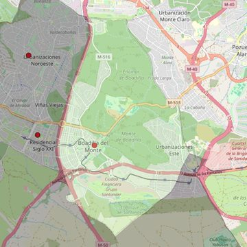

San Cristóbal
- Arciprestazgo
- Villaviciosa de Odón
- Población
- Boadilla del Monte
- Dirección postal
- Avda. Adolfo Suárez, 10
- Código postal
- 28660
- Extensión
- 21,44 km² (2.144 ha)
- Teléfono
- 916 331 053
- Correo electrónico
- parroquiaboadilla@gmail.com
- Información demográfica
- De la parroquia · De la población (Boadilla del Monte) · Del arciprestazgo (Villaviciosa de Odón)


Descargar mapaLímites según decreto
“Partiendo del punto de encuentro de la carretera M-511 con los límites de los términos municipales de Boadilla del Monte y Villaviciosa de Odón, arrancan por los límites de los términos municipales de Boadilla del Monte y Villaviciosa de Odón (en dirección sureste); siguen por los límites de los términos municipales de Boadilla del Monte con Alcorcón, Pozuelo de Alarcón y Majadahonda (en dirección noreste, noroeste y oeste, respectivamente), por el eje de la carretera M-516 (en dirección sur), por el eje de la calle La Alberca (en dirección suroeste), por el eje de la calle Ronda (en dirección sur) y por el eje de la carretera M-511 hasta el encuentro con los límites de los términos municipales de Boadilla del Monte y Villaviciosa de Odón, punto de partida”. (Rectificación de límites, 8-MAR-2001, B.O. ABR-2001, pág. 451-452)